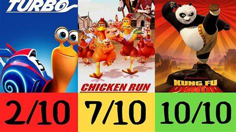
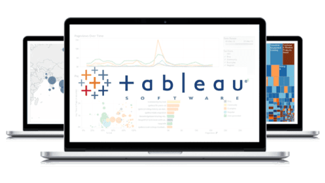

In this project we explore and analyse the audit risk dataset,
implement different Machine Learning classification models and evaluate them.
Logistic Regression, Random Forest, KNN, SVM, AdaBoost, LightGBM, XGBoostand
Implement, train and test a supervised Convolutional Neural Network (CNN) deep learning model for image recognition.
The main Python libraries used in this project are NumPy, scikit-learn and PyTorch.
Train and test multiple Regression machine learning models (Linear Regression & SVR) to predict the user engagement for future posts.
The main Python libraries used in this project are NumPy, Pandas, Scikit-learn, and for the Data Visualisation we used Matplotlib and Seaborn libraries.
In this project we analyze a Bankruptcy dataset, deploy various Machine Learning models
(KNN, SVM, LightGBM and XGBoost) to predict whether or not a bankruptcy will occur.

In this project we analyze the stack Exchange database and in SQL Server to make it more usable for analysis.

In this project we use SQL Server to explore global COVID 19 data.
In this project we take raw housing data and transform it in SQL Server to make it more usable for analysis.

Tableau Dashboard for the project on COVID 19